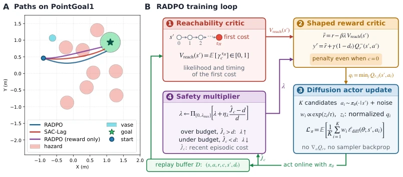
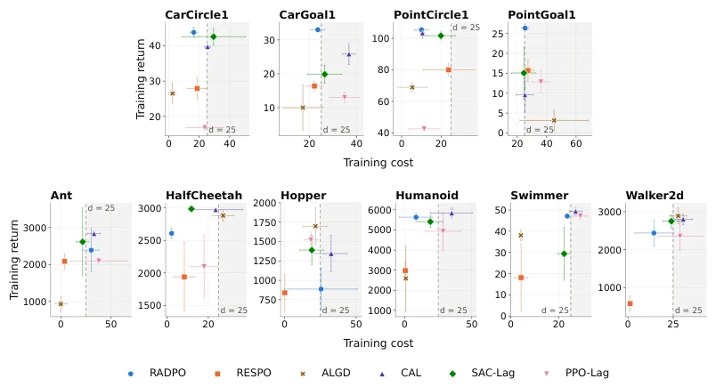
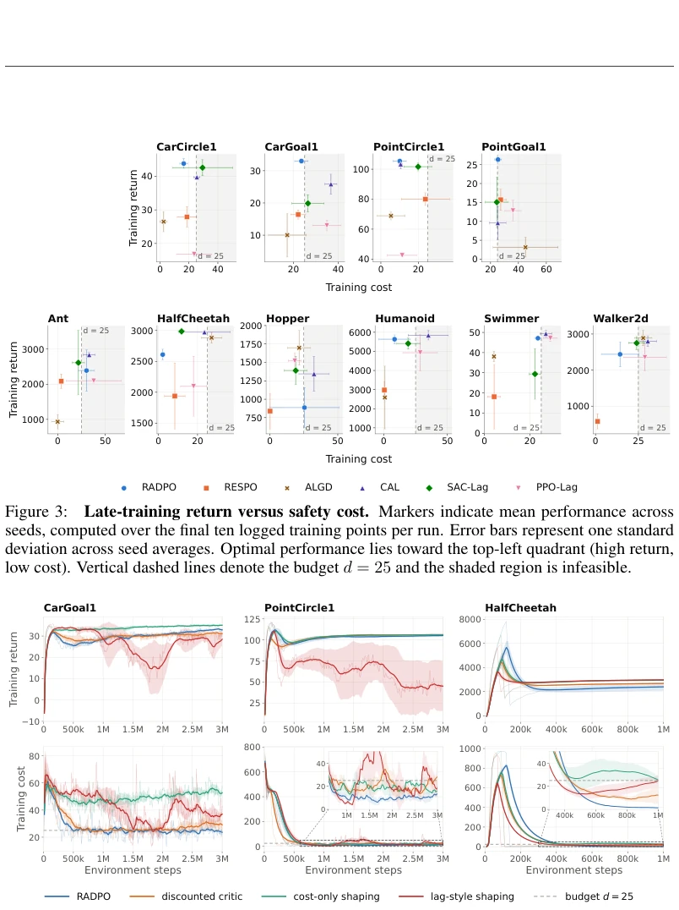
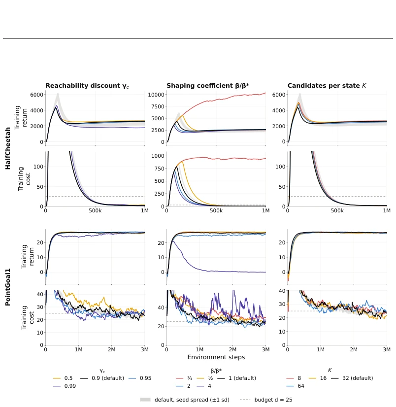
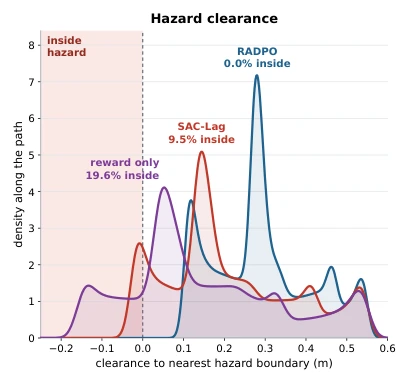
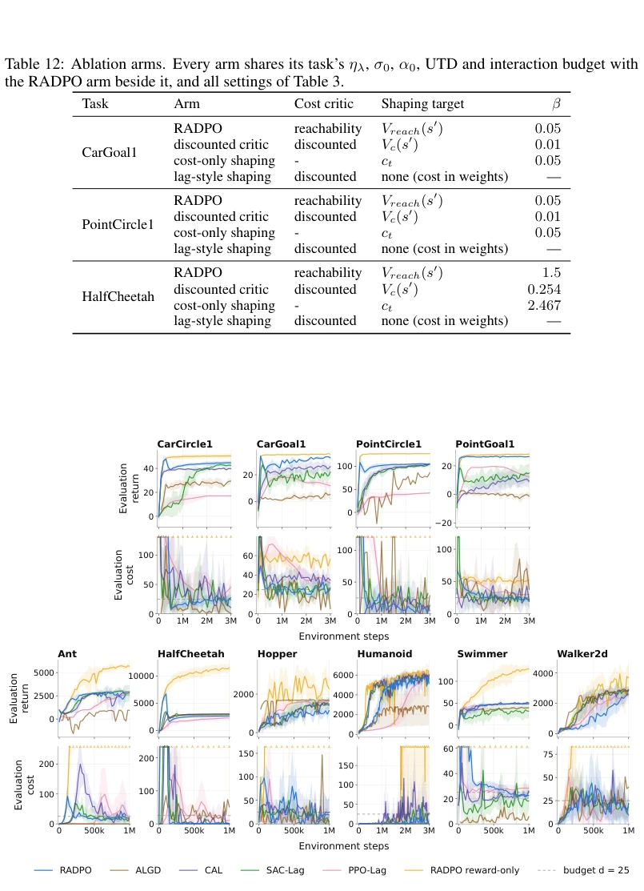

RADPO attempts to equip diffusion policies with a "safety armor", with a rather unique approach: using "first-hit" reachability prediction for early warning, rather than waiting until hitting a wall to turn back. This approach indeed understands "prevention before disaster" better than simply piling up cumulative costs, teaching robots to "take a detour" instead of "running along the wall" in navigation tasks. But don't get too excited; this method essentially relies on "patching": adjusting penalty strength via budget feedback. Although the theoretical derivation is elegant, in actual implementation, that "first-hit" prediction on offline data might just be a product of "survivor bias". Moreover, it processes safety signals and budget feedback separately; although flexible, this implies it may not provide strict constraint guarantees like traditional Lagrangian methods. Overall, this is a smart survival tactic in the gap between "model-free" and "safe online optimization", but it still lacks a bit of "absolute safety", after all, it only predicts risk, rather than eliminating risk.
研究动机Motivation
安全强化学习（Safe RL）的核心痛点在于：如何在最大化任务回报的同时，确保累积安全成本不超标。现有的方法大多依赖累积成本（Cumulative Cost）来评估风险，比如 Achiam et al. (2017) 提出的约束策略优化（CPO）或 Stooke et al. (2020) 的拉格朗日方法。然而，累积成本有个致命弱点：它无法区分“即将发生的危险”和“遥远的隐患”。一个动作可能当下不产生成本，却把智能体引向未来的深渊，而累积成本往往滞后。虽然 Yu et al. (2022) 和 Ganai et al. (2023) 提出了基于可达性（Reachability）的方法，但它们通常缺乏对“首次命中”时间的精细加权，或者依赖显式动力学模型。在扩散策略（Diffusion Policies）领域，虽然 Ma et al. (2025) 等提出了在线优化框架，但大多只关注奖励最大化，缺乏结合预测性安全信号且无需动力学模型的方案。RADPO 正是为了解决这一空白：如何在没有显式模型的情况下，利用“首次命中”的可达性信息来指导扩散策略的在线优化，同时通过预算反馈调节安全强度。
The core pain point of Safe RL lies in: how to ensure cumulative safety costs do not exceed limits while maximizing task returns. Existing methods mostly rely on Cumulative Cost to assess risk, such as Constrained Policy Optimization (CPO) proposed by Achiam et al. (2017) or the Lagrangian method by Stooke et al. (2020). However, cumulative cost has a fatal weakness: it cannot distinguish between "imminent danger" and "distant hazards". An action might not incur cost now, but lead the agent into a future abyss, while cumulative cost is often lagging. Although Yu et al. (2022) and Ganai et al. (2023) proposed Reachability-based methods, they usually lack fine-grained weighting of "first-hit" time, or rely on explicit dynamic models. In the field of Diffusion Policies, although Ma et al. (2025) and others proposed online optimization frameworks, most focus only on reward maximization, lacking schemes combining predictive safety signals without dynamic models. RADPO is exactly to solve this gap: how to utilize "first-hit" reachability information to guide online optimization of diffusion policies without explicit models, while adjusting safety intensity through budget feedback.

Figure 1: (A) Evaluation paths obtained from fully trained policies on the same fixed PointGoal1 layout. See Figure 6 for clearance distribution of these paths. (B) Illustrative diagram for the RADPO algorithm.
RADPO's overall framework is a model-free online optimization loop, the core lies in integrating "predictive safety signals" into the value-weighted denoising regression of diffusion policies. The Pipeline is divided into three steps: First, train a "Reachability Critic", it does not predict specific cost values, but predicts the probability and time-weighted value of the first cost event occurring in the future (Discounted First-hit Reachability). This value is learned via binary cross-entropy loss, capturing "when" and "whether" a wall will be hit. Second, design an "Adaptive Safety Multiplier", it does not directly participate in the Lagrangian multiplier update of policy gradients, but dynamically adjusts the intensity of reachability penalty based on the deviation between actual cumulative cost of the recent period and preset budget. Finally, in the diffusion policy update stage, use the reward critic to score candidate actions, this reward is composed of original reward minus "reachability penalty". The policy is updated via Value-weighted Denoising Regression, weights are determined by the action's reward score, and completely avoids calculating action gradients through the critic or backpropagating through the diffusion sampler. This design allows the algorithm to retain the expressive power of diffusion policies, while achieving proactive obstacle avoidance through "first-hit" signals, and preventing excessive conservatism through the budget feedback mechanism.
The authors evaluated on 10 continuous control safety tasks on the Safety Gymnasium benchmark, comparing SAC-Lag, PPO-Lag, CAL, RESPO, ALGD, and an unconstrained RADPO variant. The main metrics are cumulative reward and cumulative cost. Results show that RADPO significantly reduced constraint violations on navigation tasks (such as PointGoal, CarGoal), compared to the reward-only version, it successfully avoided obstacles while maintaining high returns. On locomotion tasks (such as HalfCheetah, Humanoid), RADPO also demonstrated good reward-cost trade-off, although not as aggressive as some baselines on some tasks, but overall more robust. Ablation experiments further confirmed that "reachability signals" are superior to simple "discounted cost critics", and integrating safety penalties into reward shaping is more stable than directly acting on action weights. Especially Figure 1 shows RADPO taking a more conservative path in navigation, while SAC-Lag stays tight to the danger boundary.

Figure 3: Late-training return versus safety cost. Markers indicate mean performance across seeds, computed over the final ten logged training points per run. Error bars represent one standard deviation across seed averages. Optimal performance lies toward the top-left quadrant (high return, low cost). Vertical dashed lines denote the budget d = 25 and the shaded region is infeasible.

Figure 4: Ablations on safety-signal formulation and penalty placement. Training return (top) and episodic cost (bottom). Curves depict means across evaluated seeds with one standard deviation shaded. Solid lines show smoothing over raw trajectories (faint curves). Inset axes provide magni- fied views around the cost budget d = 25.

Figure 5: Ablations on hyperparameter values. Ablation results for reachability discount γc, shaping coefficient β and candidates per state K. Curves depict means across evaluated seeds with one standard deviation shaded.
其他图片Other Figures

Figure 6: Distribution of states for trajectories in Figure 1.A.

Figure 7: Deterministic-evaluation return and cost across the ten tasks. Evaluation return (upper row of each block) and evaluation cost (lower row), measured over 20 deterministic episodes per checkpoint; the training-rollout counterpart is Figure 2. Curves are means over the runs of an arm with one standard deviation shaded, and dashed horizontal lines mark the budget d = 25.